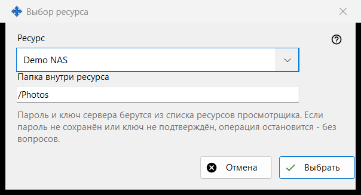
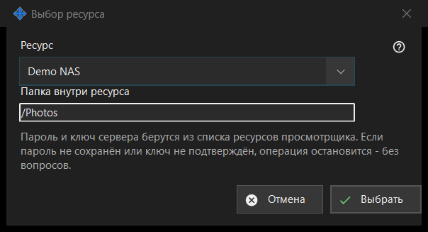

Выбор ресурса
Назначение
Выбирает ресурс из списка ресурсов просмотрщика как источник или назначение операции по расписанию. Окно открывается кнопкой «Ресурс..» рядом с Источником или Назначением в окне операции по расписанию.


Порядок действий
- Выберите ресурс в списке «Ресурс».
- Проверьте или измените «Папка внутри ресурса»; сначала это корневая папка ресурса.
- Нажмите «Выбрать». «Отмена» оставляет прежнее место.
Элементы окна
Список ресурсов
Предлагаются только SFTP-серверы и сетевые папки из списка просмотрщика, по алфавиту; ресурсы других видов не показываются. Если подходящих нет, окно сообщает: «В списке ресурсов нет подходящих ресурсов. Добавьте SFTP-сервер или сетевую папку в просмотрщике.», а кнопка «Выбрать» остаётся недоступной. Добавлять ресурс и заново подтверждать его ключ нужно в просмотрщике; это окно соединений не устанавливает.
Папка внутри ресурса
Папка должна лежать внутри корня выбранного ресурса, иначе «Сохранить» в окне операции её отклонит. При выборе другого ресурса поле заполняется корнем этого ресурса.
Запуск без вопросов
Пароль и ключ сервера берутся из списка ресурсов просмотрщика. Запуск ничего не спрашивает: если пароль не сохранён или ключ сервера не подтверждён, операция останавливается, а журнал объясняет причину. Ресурс только для чтения нельзя использовать для переноса и удаления, ресурс с корнем под PIN-кодом отклоняется, а архив принимает только обычные папки.
Настройки менеджера · Настройки общего доступа SFTP · Настройки сервера обмена